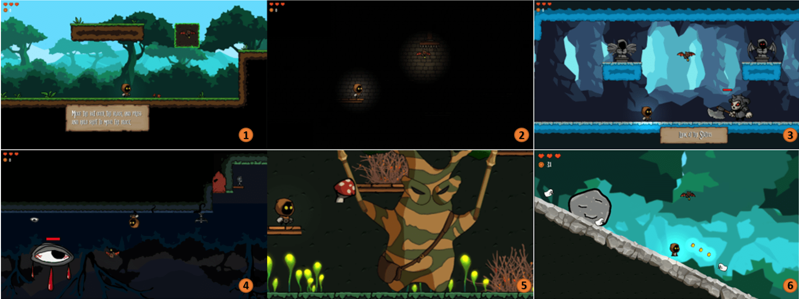

I am a Research Associate in the Institute of Media Informatics at Ulm University, Germany with Enrico Rukzio.
In 2023, I visited Cornell Tech, working in the Future Automation Research Laboratory led by Wendy Ju.
Before starting my PhD, I was a Software Engineer at Airbus Defence and Space.
My multidisciplinary research in Human-Computer Interaction (HCI), Accessibility, and Computational Methods is dedicated
to tackling complex challenges and seizing opportunities within advanced mobility technologies. It involves designing, implementing, and testing novel simulators to study futuristic mobility scenarios. My work aims to address issues such as undertrust
in automated vehicles and to enhance accessibility in urban (air) mobility, thereby supporting societal and industrial growth.
A significant portion of my research focuses on evaluating innovative interaction paradigms between automated vehicles and
vulnerable road users, utilizing empirical evidence alongside simulation-based approaches to analyze their broad-scale impacts.
Our paper "Hey, What’s Going On? Conveying Traffic Information to People with Visual Impairments in Highly Automated Vehicles: Introducing OnBoard" was accepted at IMWUT. We conducted an
interactive, participatory workshop (N=4) to develop an auditory interface and OnBoard- a tactile interface with expandable
elements - to convey traffic information to visually impaired people. In a user study with N=14 participants, we explored
usability, situation awareness, predictability, and engagement with OnBoard. Pre-print available under this LINK.
March 2024
Our paper "Law and Order: Investigating the Effects of Conflictual Situations in Manual and Automated Driving in a German Sample" was accepted for IJHCS (IF 5.4). We conducted two studies: one involving an online survey and a Virtual Reality experiment that explored how the obligation of automated vehicles to strictly adhere to traffic laws influences user-vehicle conflicts and trust, revealing a preference for legal compliance but a willingness to override for personal interests. Pre-print available under this LINK.
March 2024
Interested in Robotics in the real world? Our LBW "Field Notes on Deploying Research Robots in Public Spaces" was accepted to CHI'24. Share your insights in our public GitHub repository to help advance Human-Robot Interaction!
January 2024
Our award-winning VR game The Social Engineer has now been released to the SteamStore. Check it out!
January 2024
I will be joining the editorial board of IMWUT as an Associate Editor. Also, I am happy to serve as a full paper AC for CSCW.
January 2024
Four papers were cond. accepted to CHI 2024! Excited to share more insights soon. Preprints now available.
January 2024
PedSUMO was accepted as a short paper to HRI'24. See the link for the open-sourced code to study large-scale effects of eHMIs.
January 2024
I am happy to serve as a Full Paper AC for the User Experience and Usability subcommittee for CHI 2024. I also serve for the Best Paper committee for CHI'24.
Mobility serves as a cornerstone for societal advancement and industrial growth.
As we move towards automated systems and explore unconventional transportation methods
like urban air mobility, we face a dichotomy of challenges, such as "undertrust" in technology
and opportunities like enhanced accessibility. My multidisciplinary research spans
Human-Computer Interaction (HCI), Accessibility, and Computational Methods to achieve
three core objectives:
Characterizing Novel Mobility Systems: Conducting empirical studies to unearth
the challenges and opportunities associated with emerging forms of mobility, particularly focusing
on accessibility issues.
Behavioral Analytics: Investigating the travel behaviors of both the general
populace and vulnerable groups to better understand their unique needs and risks in various
traffic scenarios.
Human-Centric Solutions: Leveraging insights from the above studies to design
and implement solutions—ranging from technical prototypes and guidelines to industrial collaborations
and educational initiatives—that aim to make traffic safer and more accessible for all.
Publications (Excerpt)
I have published more than 30 first-author publications and have contributed to numerous further ones. My most significant research contributions have been published in leading HCI conferences and journals like CHI (13 full paper publications) and IMWUT (7 full paper publications). Below is a small excerpt of my work.

Effects of a Gaze-Based 2D Platform Game on User Enjoyment, Perceived
Competence, and Digital Eye Strain CHI, 2024
Mark Colley, Beate Wanner, Max Rädler, Marcel Rötzer, Julian Frommel, Teresa Hirzle, Pascal Jansen, Enrico Rukzio
Link, PDF
Investigating the Effects of External Communication and Platoon Behavior on
Manual Drivers at Highway Access CHI, 2024